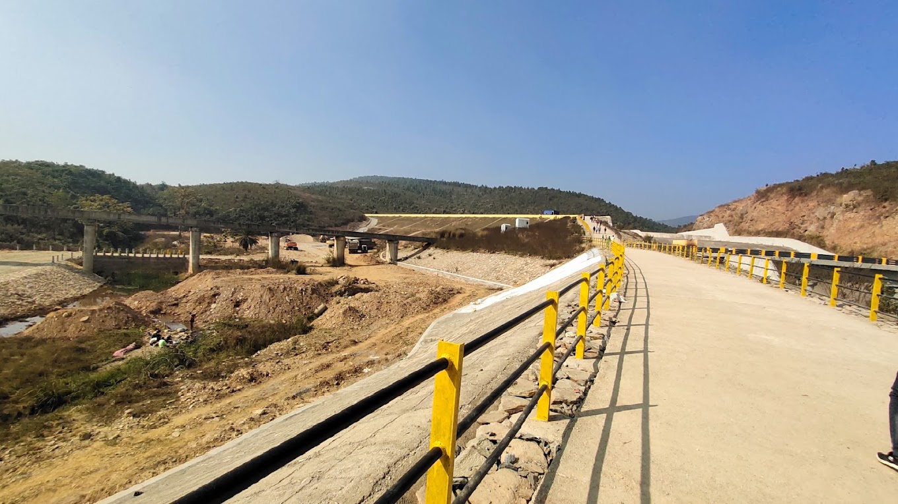

May 8 , 2023
Satnala Dam is located on the Subarnarekha River, approximately 30 kilometers from Jamshedpur. It
was built in 1912 by the Tata Group to supply water for their steel plant. Today, it serves as a
popular recreational spot, attracting visitors with its scenic beauty and boating facilities.
The dam's serene surroundings and picturesque views make it a great destination for nature
lovers and photography enthusiasts. The dam also has a picnic spot nearby, providing a perfect
setting for a relaxing day out with family and friends.

Dimna Dam is a popular tourist spot located in Jamshedpur, Jharkhand. It is an ideal picnic spot
for locals and visitors. The dam is surrounded by lush greenery and offers stunning views of the
Dimna Lake. Adventure enthusiasts can also indulge in activities like boating and fishing here.
The serene surroundings and calm waters make Dimna Dam a peaceful retreat away from the city's
hustle and bustle.

Pradhan Dam, located in the outskirts of Jamshedpur, is a popular picnic spot surrounded by hills
and lush greenery. The dam is built across the Swarnarekha River and serves as a source of
irrigation for nearby agricultural lands. Visitors can enjoy boating, fishing, and picnicking in
the scenic surroundings. The dam is also a great spot for birdwatching and wildlife sightings.
Additionally, there are several small temples nearby that visitors can explore. Overall, Pradhan
Dam is a great place for a peaceful and relaxing day trip.

Sitarampur Dam is a picturesque spot located in Jamshedpur, Jharkhand. It is a popular picnic
spot among locals and tourists alike, thanks to its scenic beauty and serene atmosphere. The dam
is surrounded by lush greenery and is ideal for boating, fishing, and enjoying a day out with
family and friends. It also serves as a source of water supply for the nearby areas.